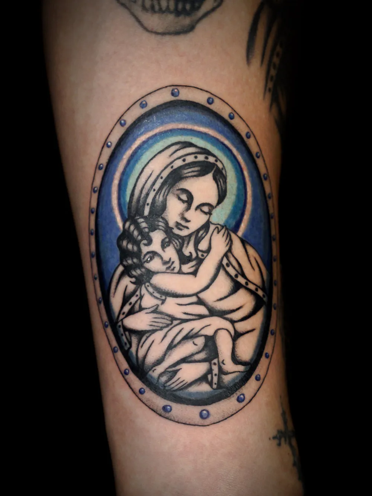
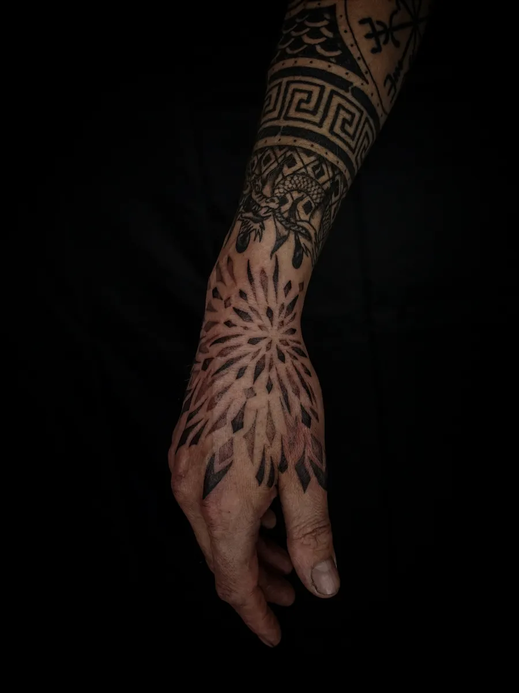
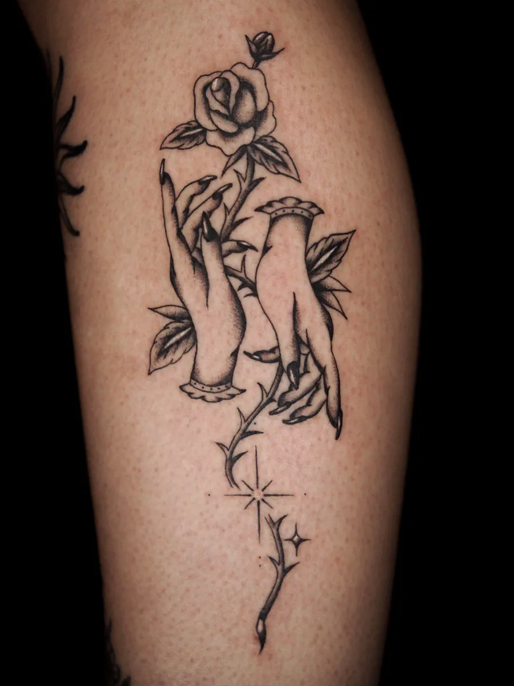
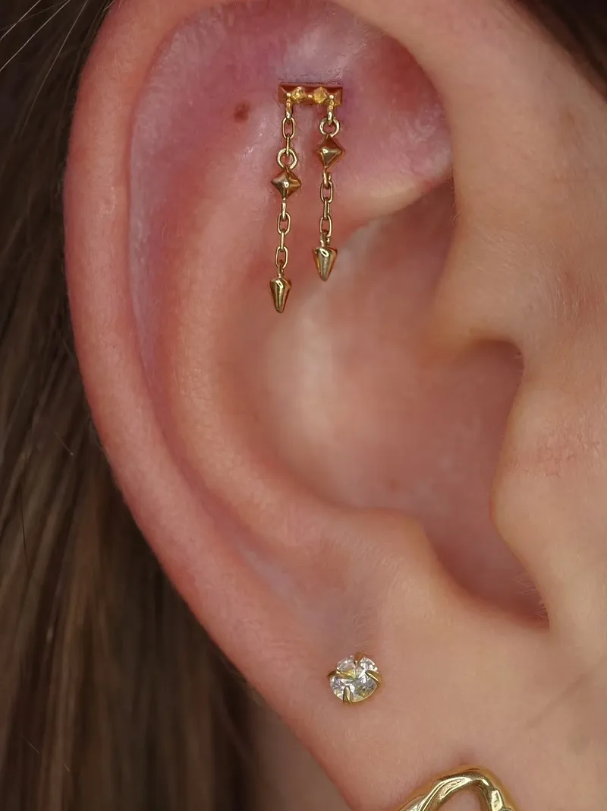
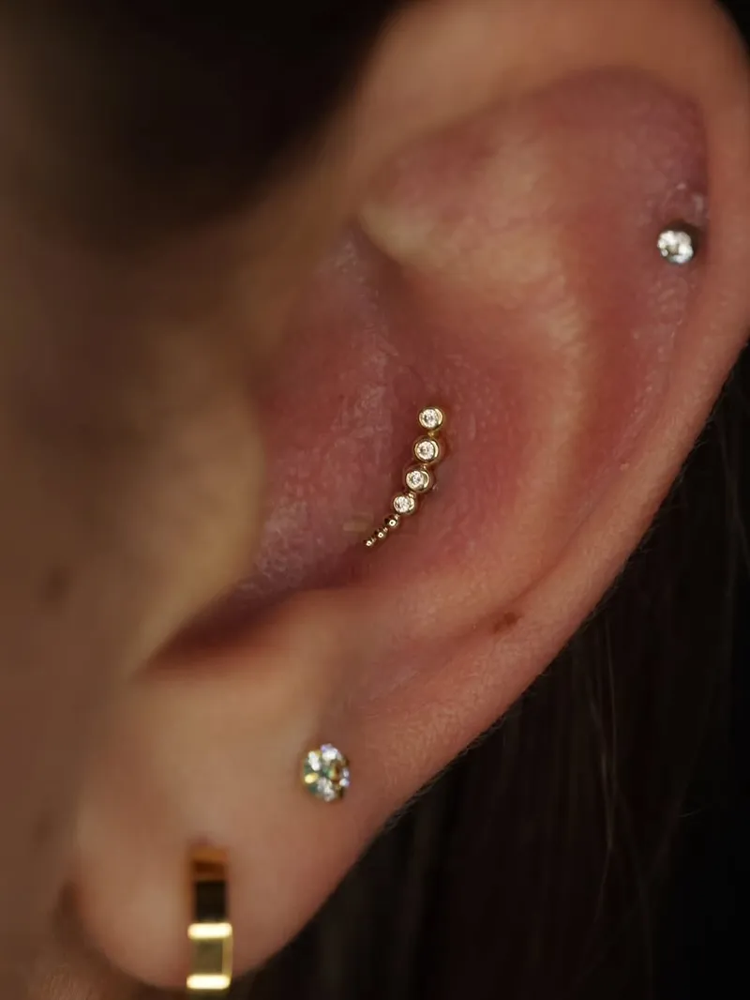
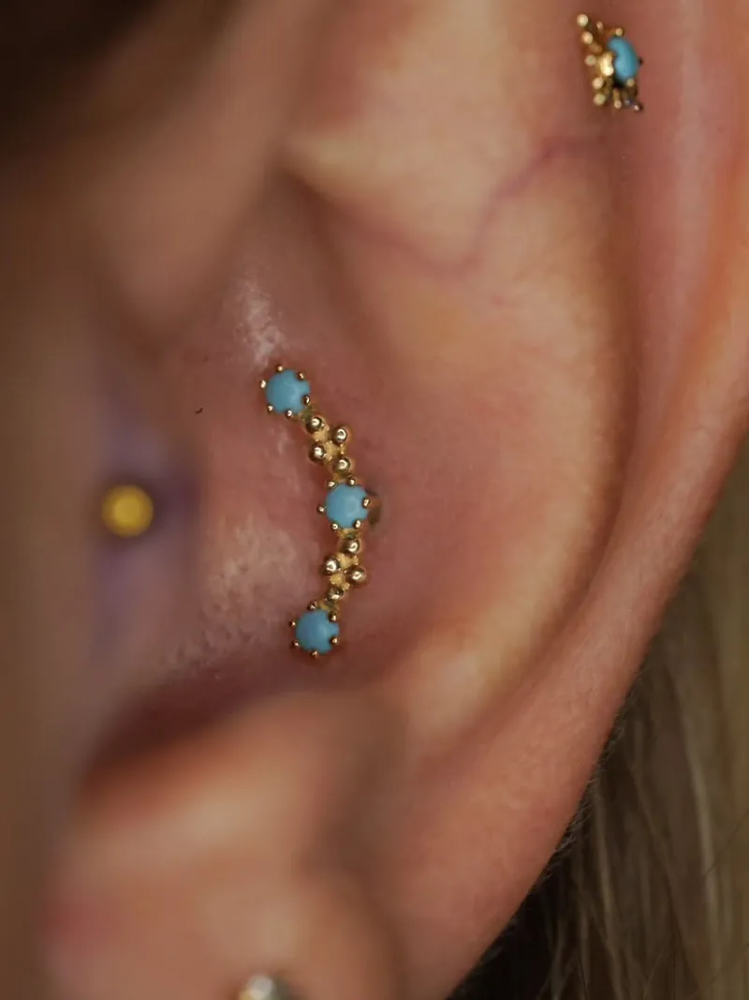

Eerst een babbel, dan de naald.
Sid tekent je ontwerp samen met jou uit en legt onderweg uit wat hij doet. Van een panter met rozen tot een mandala over de hand: elk stuk begint bij jouw idee. Achteraf krijg je tips voor de verzorging mee.






Sid
Grote en kleine stukken, met veel schaduw en diepte. Stuur hem je idee en de plek op je lichaam.
@wanderlust_sidtattooFineline
Een vlinder op de pols, een fijn lijntje. Voor wie het liever klein en subtiel houdt.
@wanderlust_finelinetattooTattoo-afspraken lopen via de artiesten zelf. Stuur een bericht met je idee en de plek op je lichaam.
Een juweel dat je oor volgt.
We kijken eerst naar de vorm van je oor en kiezen dan samen een stuk dat er echt bij past. Steriel gewerkt, met duidelijke uitleg over de nazorg.





"It's so much fun when a piece perfectly accentuates the shape of the ear."Uit een van onze posts op Instagram
- Nieuwe piercingOor, neus en meer. Van helix tot second lobe.
- Wissel naar goudJe starter vervangen door een stuk dat je echt wil dragen.
- VerkleinenEen korter staafje zodra je piercing daar klaar voor is.
- Advies bij problemenOok voor piercings die ergens anders gezet zijn. Zit er iets niet goed, kom gerust langs.
Waarmee we werken
- 14 karaat goud
- Implant grade
- 18 karaat goud
- Implant grade
- Titanium
- Implant grade
Rustig, proper en met uitleg.
Over de tattoos
"Na een goede babbel over wat ik wou, had Sid het heel goed begrepen en mocht ik een verbluffend resultaat bekomen van wat ik wou. Paardje is super realistisch en prachtig gedaan. Thank you so much, Sid!"
Britt Govaert"Eerste tattoo gekregen van Sid. Fijn samengezeten om het design te maken, uitleg tijdens het proces en tips voor verzorging achteraf!"
Preben
Over de piercings
"Heel professionele zaak. Neuspiercing hier laten steken. Neemt echt haar tijd, geeft heel goed advies en begeleiding. Heel goeie hygiëne en duidelijke uitleg."
Danielle D'hoore"Ik was op vakantie in Brugge toen was mijn oorbel onder mijn huid gegroeid. Ze heeft heel steriel gewerkt en na veel prutsen (oor was heel dik) toch mijn oorbel eruit gekregen. Fijne service!!!"
Maaike de Waal"Langsgeweest voor advies en piercingwissels vandaag. Heel vriendelijk, legt alles goed uit, neemt de tijd en alles is super hygiënisch."
Anoniemvisje1995
Spring eens binnen.
Voor een piercing, een wissel of een vraag kan je tijdens de openingsuren gewoon bellen of langskomen.
Uren
- Maandag11:30 tot 16:30
- Dinsdaggesloten
- Woensdaggesloten
- Donderdag11:30 tot 16:30
- Vrijdag11:30 tot 16:30
- Zaterdag11:30 tot 16:30
- Zondaggesloten
Volg ons
- @wanderlust_tattoopiercingPiercings, juwelen en nieuws van de studio
- @wanderlust_sidtattooTattoo-afspraken bij Sid
- @wanderlust_finelinetattooFineline tattoos
Sint-Jakobsstraat 56, 8000 Brugge
0471 20 67 85